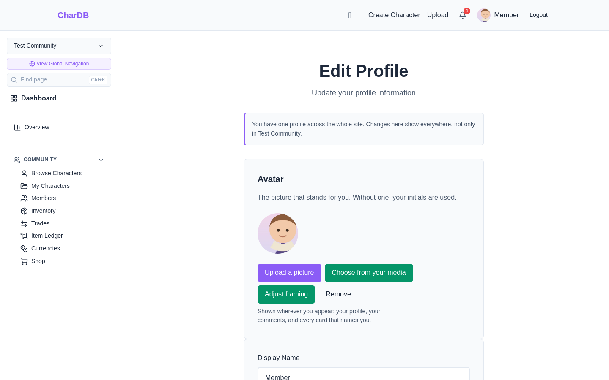
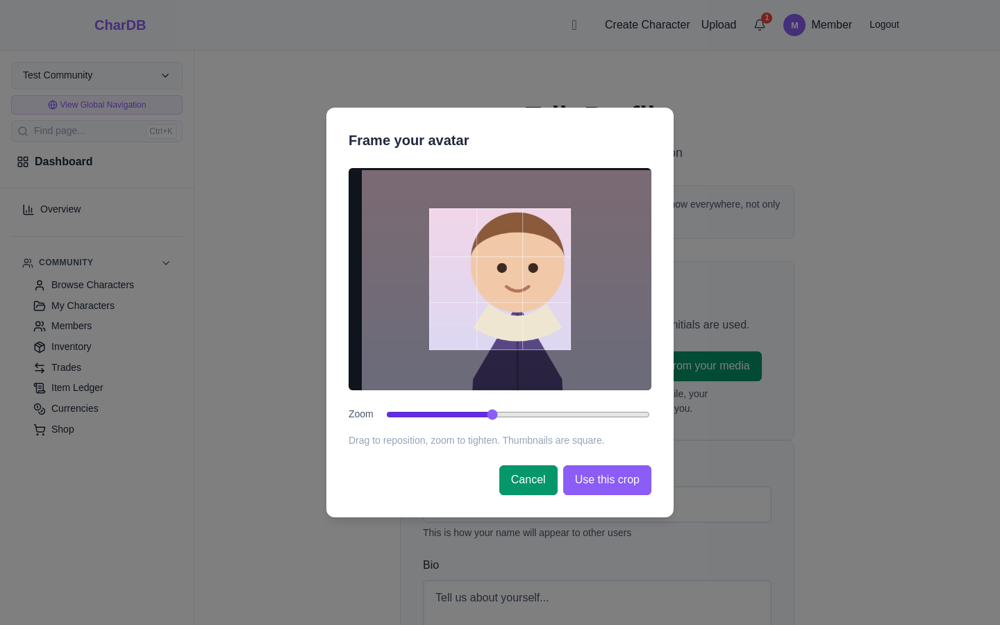
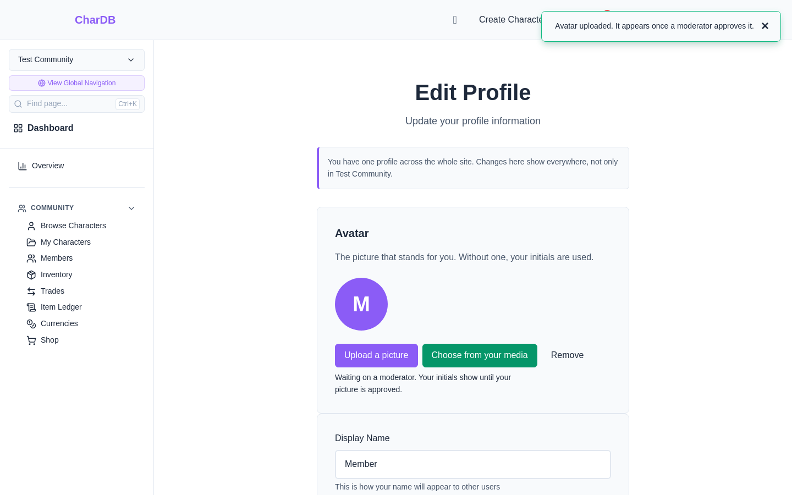
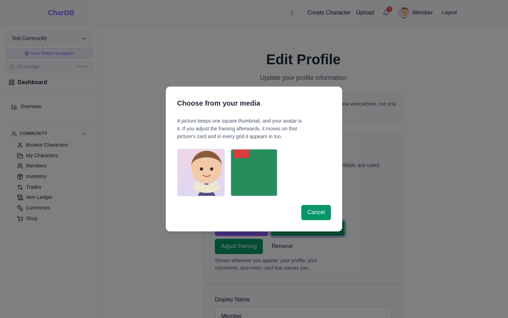
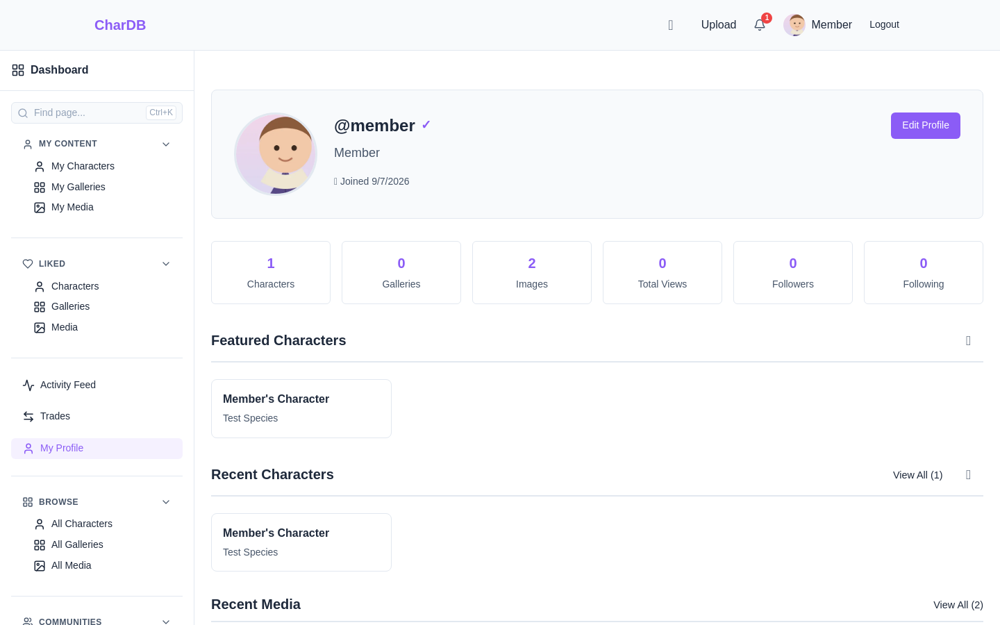

The picture that stands for you
Your name appears all over CharDB — on your profile, beside every comment you leave, on the cards that list your characters and your art. Next to it there has always been a circle with your initials in it, and no way to put anything else there.
You can now set a picture. Upload a new one, or pick something you have already uploaded, and choose which square of it to use.
Send a new picture straight from this page
Pick something already in your media
Say which square, rather than taking the middle
Remove it and go back to your initials whenever
The avatar sits at the top of Edit Profile, above your display name and bio. It saves the moment you choose something — there is no need to press Save Changes further down the page.
You can reach this page from a community as well as from the main site. It is the same page and the same single profile either way: what you change here shows everywhere, not just in the community you happened to be in. The page says so when you arrive from one.

Upload a picture asks for a file and then offers a square frame over it. Drag the picture to reposition it, or use the zoom slider to tighten in.
This matters more than it sounds. Character art is usually full-body, and the middle of a full-body drawing is a torso. Framing on the face is the difference between an avatar that is recognisable at 32 pixels and one that is a coloured smudge.

Once it is sent, the picture goes to your community's moderators like any other upload. Your initials stay up in the meantime, and the page says why.
If a picture is rejected, the page tells you that instead, and your initials stay up until you pick a different one.

Choose from your media shows the pictures you have uploaded. Click one and it becomes your avatar straight away.
Anything still waiting on moderation appears greyed out and labelled rather than hidden, so a picture you know you uploaded is never simply missing from the list.

Everywhere your name appears: your profile heading, the corner of every page while you are signed in, your comments, the member lists of the communities you belong to, and the cards that credit you as an owner or an artist.
Removing it puts your initials back. The picture itself stays in your media — removing an avatar is not deleting an upload.
